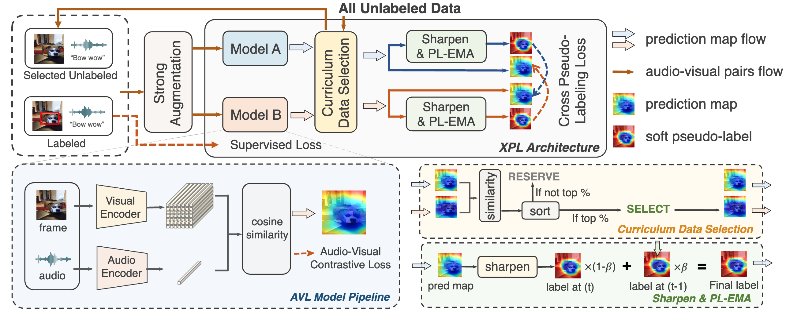

|
Yuxin Guo I'm currently a fourth-year Ph.D. student at Institute of Automation, Chinese Academy of Sciences, supervised by Prof. Wei Zou. Before that, I obtained my B.Eng. degree from Wuhan University in 2021, where I was supervised by Prof. Cien Fan. My research interests lie in audio-visual multimodal learning. Currently, I focus on audio-video large language models, long-audio generation and unified multimodal understanding and generation, as well as video understanding. Email / Google Scholar / Github / DBLP |

|
Education
|
Internship
|
News
|
Preprints* indicates equal contribution |
|
AudioStory: Generating Long-Form Narrative Audio with Large Language Models
Yuxin Guo, Teng Wang, Yuying Ge, Shijie Ma, Yixiao Ge, Wei Zou, Ying Shan |
Publications |
|
ReasonPlan: Unified Scene Prediction and Decision Reasoning for Closed-loop Autonomous Driving
Xueyi Liu, Zuodong Zhong, Yuxin Guo, Yun-Fu Liu, Zhiguo Su, Qichao Zhang, Junli Wang, Yinfeng Gao, Yupeng Zheng, Qiao Lin, Huiyong Chen, Dongbin Zhao The Conference on Robot Learning (CoRL), 2025 arXiv |
|
|
GenHancer: Imperfect Generative Models are Secretly Strong Vision-Centric Enhancers
Shijie Ma, Yuying Ge, Teng Wang, Yuxin Guo, Yixiao Ge, Ying Shan International Conference on Computer Vision (ICCV), 2025 Paper / arXiv / Project Page / Code / Model |
|
|
Aligned Better, Listen Better for Audio-Visual Large Language Models
Yuxin Guo, Shuailei Ma, Shijie Ma, Xiaoyi Bao, Chen-Wei Xie, Kecheng Zheng, Tingyu Weng, Siyang Sun, Yun Zheng, Wei Zou International Conference on Learning Representations (ICLR), 2025 Paper / arXiv |
|
|
Cores: Orchestrating the dance of reasoning and segmentation
Xiaoyi Bao, Siyang Sun, Shuailei Ma, Kecheng Zheng, Yuxin Guo, Guosheng Zhao, Yun Zheng, Xingang Wang The European Conference on Computer Vision (ECCV), 2024 arXiv / Code |
|

|
CrossMAE: Cross-Modality Masked Autoencoders for Region-Aware Audio-Visual Pre-Training
Yuxin Guo, Siyang Sun, Shuailei Ma, Kecheng Zheng, Xiaoyi Bao, Shijie Ma, Wei Zou, Yun Zheng IEEE/CVF Conference on Computer Vision and Pattern Recognition (CVPR), 2024 Paper |
|  |
Cross Pseudo-Labeling for Semi-Supervised Audio-Visual Source Localization
Yuxin Guo, Shijie Ma, Yuhao Zhao, Wei Zou International Conference on Acoustics, Speech, and Signal Processing (ICASSP), 2024 Paper / arXiv |
|
Dual Mean-Teacher: An Unbiased Semi-Supervised Framework for Audio-Visual Source Localization
Yuxin Guo, Shijie Ma, Hu Su, Zhiqing Wang, Yuhao Zhao, Wei Zou, Siyang Sun, Yun Zheng Advances in Neural Information Processing Systems (NeurIPS), 2023 Paper / arXiv / Code |
Honors and Awards
|
Academic Services
|
|
|
© Yuxin Guo | Last updated: August, 2025